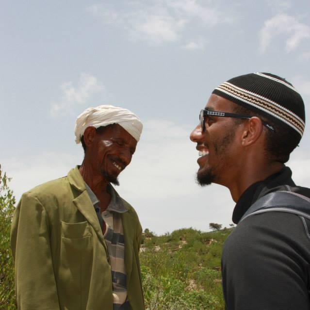

Mohammed Kemal
Mohammed Kemal has been working full time as a Scientific Programmer II at NOAA for about a year now while at the same time attending full time graduate school. As a scientific programmer, Mohammed Kemal works on two different routine monitoring desks, Oil and Fire. He is required to integrate large variety of satellite imagery as well as ancillary data such as wind direction and speed, ocean current and many more. This allows the analyst to create interpretive satellite-based analyses and issue products. Mohammed Kemal is required to communicate with coworkers orally as well as in writing and issue reports. These reports are released to the US and State government and global users. Though the two listed desks are the main desks Mohammed Kemal works on, he had a brief introduction on others desks such as Precipitation, Volcano (monitoring airborne volcanic ash) and Tropical (monitoring tropical storms). All the satellite imagery products are created in near-real time and are monitored on a 24x7x365 operational basis.
The Oil Desk; the purpose of this desk is to monitor all the surrounding body of water that is within the US designated boarders and to see whether an oil spill has occurred. In the case of oil spills, a Marine Pollution Surveillance Report (MPSR) is issued and sent to respected recipients. Mohammed Kemal has been able to identify many situations of illegal oil spills and natural seeps leaking, which help mitigate hazards material from harming the surrounding environment.
The Fire Desk is also a routine monitoring station. This desk requires the analyst to look at all land that is within the Canadian and US borders including Puerto Rico, Alaska and Hawaii. The purpose of this desk is to use the different satellite imagery and find areas that a fire has taken place. In cases of fires, the analyst is required to see if there is smoke coming from those fires and if there is a gust blowing dust through the US borders. At the end of each routine monitoring shift, a report is issued and a map is generated with the areas that have fires and smoke.